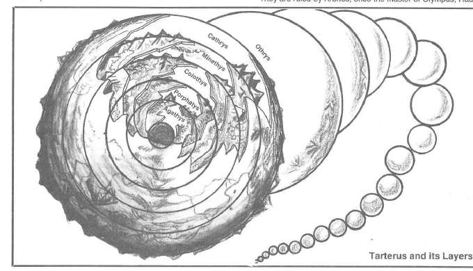

塔耳塔洛斯 · Tarterus
塔耳塔洛斯是混乱与邪恶之间的巨大荒原，由一串大小不一的黑色球体组成。每个球体都是一层世界，漂浮在无尽的黑暗中；球体之间可见，却很难直接穿越。层内常有沼泽、火山、腐败森林和被流放的巨人。
塔耳塔洛斯的六个著名层为奥特律斯（Othrys）、卡瑟里斯（Cathyrys）、米涅忒斯（Minethys）、科洛透斯（Colothys）、波耳斐律斯（Porphatys）和阿伽提斯（Agathys）。塔耳塔洛斯的边界通往哈迪斯、深渊和格赫纳；门户常是巨大的方尖碑或嵌在球体表面的裂口。

位面中最危险的居民是被流放的泰坦、巨人和恶魔。克洛诺斯（Kronos）曾统治奥林匹斯和哈迪斯，如今在塔耳塔洛斯等待重新夺回权力。旅行者也可能遇到许多古老伟大力量的囚徒，他们的牢狱本身就是一个层。